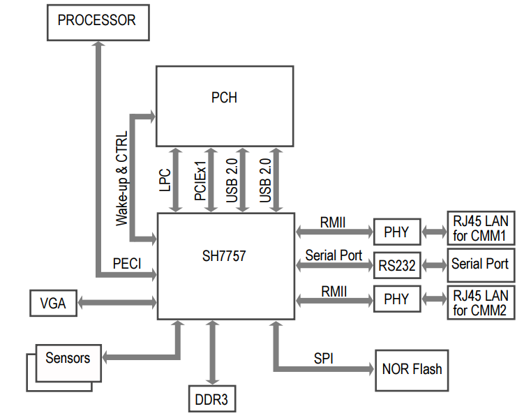
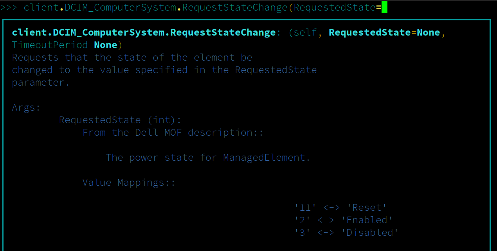
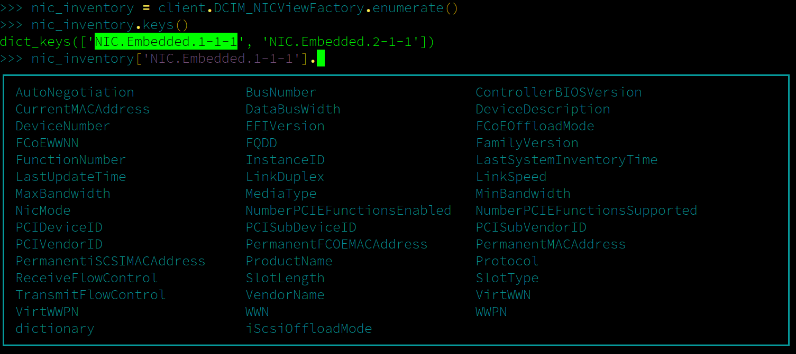
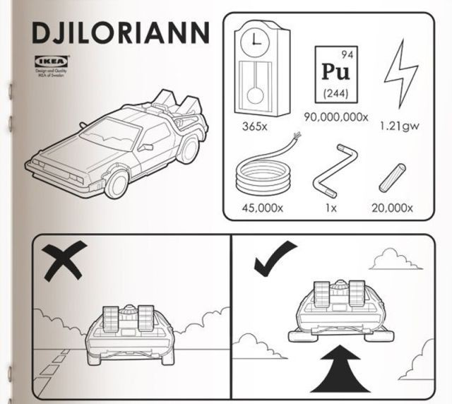

Charming the Dell Lifecycle Controller with Python
John Hickey
Created: 2017-05-30 Tue 18:08
Verizon Digital Media Services

The Cloud
What exactly is an "iDRAC"

Basically a computer inside a computer
What is a "Lifecycle Controller"?
A service that runs on top of the iDRAC hardware
- Update firmware
- Configure RAID and BIOS
- Perform diagnostics
- Provide rich data about server configuration
Lifecycle Controller API
<s:Envelope xmlns:s="http://www.w3.org/2003/05/soap-envelope"
xmlns:wsa="http://schemas.xmlsoap.org/ws/2004/08/addressing"
xmlns:wsman="http://schemas.dmtf.org/wbem/wsman/1/wsman.xsd">
<s:Header>
<wsa:Action s:mustUnderstand="true">
http://schemas.dell.com/wbem/wscim/1/cim-schema/2/DCIM_ComputerSystem/RequestStateChange
</wsa:Action>
<wsa:To s:mustUnderstand="true">
https://192.168.0.120:443/wsman
</wsa:To>
<wsman:ResourceURI s:mustUnderstand="true">
http://schemas.dell.com/wbem/wscim/1/cim-schema/2/DCIM_ComputerSystem
</wsman:ResourceURI>
<wsa:MessageID s:mustUnderstand="true">
uuid:062b91fd-e3f1-4a75-9075-9a96787752f7
</wsa:MessageID>
<wsa:ReplyTo>
<wsa:Address>
http://schemas.xmlsoap.org/ws/2004/08/addressing/role/anonymous
</wsa:Address>
</wsa:ReplyTo>
<wsman:SelectorSet>
<wsman:Selector wsman:Name="__cimnamespace">
root/dcim
</wsman:Selector>
<wsman:Selector wsman:Name="Name">
srv:system
</wsman:Selector>
<wsman:Selector wsman:Name="CreationClassName">
DCIM_ComputerSystem
</wsman:Selector>
</wsman:SelectorSet>
</s:Header>
<s:Body>
<ns0:RequestStateChange_INPUT xmlns:ns0="http://schemas.dell.com/wbem/wscim/1/cim-schema/2/DCIM_ComputerSystem">
<ns0:RequestedState>
2
</ns0:RequestedState>
</ns0:RequestStateChange_INPUT>
</s:Body>
</s:Envelope>
Higher level tools
wsman invoke -a "RequestStateChange" http://schemas.dell.com/wbem/wscim
/1/cim-schema/2/root/dcim/DCIM_ComputerSystem?CreationClassName=
"DCIM_ComputerSystem",Name="srv:system" -h 192.168.0.120 -P 443
-u root -p calvin -c Dummy -y basic -V –v -k "RequestedState=2"
Dractor
from dractor.dcim import Client
client = Client('192.168.0.120', 443, 'root', 'calvin')
client.connect()
client.DCIM_ComputerSystem.RequestStateChange(RequestedState='Enabled')
Documentation

Querying for System Information
>>> nic_inventory = client.DCIM_NICViewFactory.enumerate()
>>> nic_inventory.keys()
dict_keys(['NIC.Embedded.1-1-1', 'NIC.Embedded.2-1-1'])
>>> print(nic_inventory['NIC.Embedded.1-1-1'].ProductName)
Broadcom Gigabit Ethernet BCM5720 - F4:8E:38:FF:C9:63
Return Data Properties

Return Data Docstrings
Help on DCIM_NICView in module dractor.dcim.v2303030.DCIM_NICView object:
class DCIM_NICView(dractor.dcim.base.DCIMAttributeObject)
| DCIM_NICView is a derivation of DCIM_View
| with NIC specific data
|
| Data descriptors defined here:
|
| AutoNegotiation
| Auto Negotiated.
|
| BusNumber
| The bus number where this PCI device resides
|
| ControllerBIOSVersion
| Represents firmware version of Controller BIOS.
|
| CurrentMACAddress
| A string containing the Current MAC address
| The principal unicast address used in
| communication with the NIC. The MAC address
| is formatted as twelve hexadecimal digits
| (e.g., "010203040506"), with each pair
| representing one of the six octets of the MAC address
| in "canonical" bit order according to RFC 2469
|
| DataBusWidth
| Data-bus width of the NIC PCI device.
|
| DeviceDescription
| A string containing the friendly Fully Qualified Device Description
| A property that describes the device and its location
|
| DeviceNumber
| The device number assigned to this PCI device for this bus.
|
| EFIVersion
| Represents firmware version of EFI.
|
| FCoEOffloadMode
| Represents if Fibre Channel over Ethernet personality is enabled
| or disabled on current partition in a Converged Network Adaptor
| device. FCoEOffloadMode has the following values: Enabled
| or Disabled.
|
| FCoEWWNN
| Fiber Channel over Ethernet World Wide Node Name.
Exceptions
ERROR:dractor.dcim.base:Expected ['0', '4096'], got 2: SYS021: The command failed to set RequestedState
Traceback (most recent call last):
File "./d.py", line 10, in <module>
client.DCIM_ComputerSystem.RequestStateChange(RequestedState="Enabled")
File "/home/omen/Software/Personal/dractor/dractor/dcim/v2303030/DCIM_ComputerSystem.py", line 175, in RequestStateChange
return self._invoke_method("RequestStateChange", parameters)
File "/home/omen/Software/Personal/dractor/dractor/dcim/base.py", line 317, in _invoke_method
self._assert_return_value(result, [0, 4096])
File "/home/omen/Software/Personal/dractor/dractor/dcim/base.py", line 261, in _assert_return_value
raise DCIMCommandError(return_value, message_id, message)
dractor.exceptions.DCIMCommandError: ('2', 'SYS021', 'The command failed to set RequestedState')
Dractor Recipes are high level examples of dractor usage
- Smart configuration decisions in software for BIOS and RAID
- Server error detection and handling
Recipe Configuration
"RAID1 for OS": {
"Description": "Create a RAID1 for the first two drives and make the third a spare",
"Selectors": {
"HardwareAttributes": {
"Disk.Bay.0": {
"Model": "INTEL SSDSC2BB12"
},
"Disk.Bay.1": {
"Model": "INTEL SSDSC2BB12"
}
}
},
"Settings": {
"Disk.Virtual.0": {
"Mode": "RAID1",
"SpanDepth": 1,
"SpanLength": 2,
"VirtualDiskName": "OS",
"PhysicalDiskIDs": [ "Disk.Bay.0", "Disk.Bay.1" ]
},
"Disk.Bay.2": {
"RaidStatus": "Spare"
}
}
}
Dractor: Implementation Details

Managed Object Format
[Description(
"") ]
class DCIM_ComputerSystem : CIM_ComputerSystem {
[Override ("RequestStateChange"), Description ("Requests that the state of the element be "
"changed to the value specified in the RequestedState "
"parameter.") ]
uint32 RequestStateChange (
[IN, Description ( "The power state for ManagedElement." ),
ValueMap { "2", "3", "11" },
Values { "Enabled", "Disabled", "Reset" }]
uint16 RequestedState,
[IN ( false ), OUT, Description (
"Reference to the job (can be null if the task is completed)."
)]
CIM_ConcreteJob REF Job,
[IN, Description (
"A timeout period that specifies the maximum amount "
"of time that the client expects the transition to "
"the new state to take. The interval format must be "
"used to specify the TimeoutPeriod. A value of 0 or "
"a null parameter indicates that the client has no "
"time requirements for the transition. \n"
"If this property does not contain 0 or null and "
"the implementation does not support this "
"parameter, a return code of \'Use Of Timeout "
"Parameter Not Supported\' must be returned." )]
datetime TimeoutPeriod,
[OUT, Description (
"Error MessageID is returned if the method fails "
"to execute." )]
string MessageID,
[OUT, Description (
"Error Message in english corresponding to the "
"MessageID" )]
string Message,
[OUT, Description (
"Any dynamic string substitutions for the Message" )]
string MessageArguments[]
);
};
Handling MOF files
// DCIM MOF parsing
root:
MOFClass
;
MOFClass:
('[' qualifiers+=QualifierTypes[','] ']')?
'class' name=ID (':' parent_class=ID)? '{'
members*=Function
'};'
;
Function:
('[' qualifiers+=QualifierTypes[','] ']')?
return_type=ID ('REF')? name=/\w+(\[\])?/
('(' arguments+=FunctionArg[','] ')')?
('=' default=/\w+/)?
';'
;
FunctionArg:
('[' qualifiers+=QualifierTypes[','] ']')?
ctype=ID ('REF')? name=/\w+(\[\])?/
;
QualifierTypes:
(StringArg | IntArg | List | NegativeKeyword | Keyword)
;
StringArg:
name=ID '(' values+=STRING ')'
;
// For MaxLen, etc
IntArg:
name=ID '(' value=INT ')'
;
// Lists used by mappings
List:
name=ID '{' values+=STRING[','] '}'
;
NegativeKeyword:
name=ID '(' 'false' ')'
;
Keyword:
name=ID
;
// Base
Comment:
/\/\/.*$/
;
Metamodel
class MOFClass(Qualified):
""" MOF Class """
def __init__(self, name, qualifiers, parent_class, members):
"""
Our MOF classes consist of members, which are functions, and qualifiers
"""
self.parent_class = parent_class
self.members = members
super(MOFClass, self).__init__(name, qualifiers)
@property
def name(self):
""" Return the Pythonic Name """
return self._name.replace("[]", "")
Templates
# pylint: disable=no-name-in-module
from dractor.dcim.base import {{ mof_class.dcim_parents|join(", ") }}
{% if mof_class.attributes %}
from dractor.dcim.base import DCIMFactory
{% endif %}
class {{ mof_class.name }}({{ mof_class.dcim_parents|join(", ") }}):
"""
{{ mof_class.docstring|indent(width=4, indentfirst=False) }}
"""
.....
Auto-generated code
from dractor.dcim.base import DCIMMethodObject
class DCIM_ComputerSystem(DCIMMethodObject):
"""
"""
def RequestStateChange(self, RequestedState=None, TimeoutPeriod=None):
"""
Requests that the state of the element be
changed to the value specified in the RequestedState
parameter.
Args:
RequestedState (int):
From the Dell MOF description::
The power state for ManagedElement.
Value Mappings::
'11' <-> 'Reset'
'2' <-> 'Enabled'
'3' <-> 'Disabled'
TimeoutPeriod (datetime):
From the Dell MOF description::
A timeout period that specifies the maximum amount
of time that the client expects the transition to
the new state to take. The interval format must be
used to specify the TimeoutPeriod. A value of 0 or
a null parameter indicates that the client has no
time requirements for the transition. \n
If this property does not contain 0 or null and
the implementation does not support this
parameter, a return code of 'Use Of Timeout
Parameter Not Supported' must be returned.
Returns:
dict:
A dictionary possibly containing these keys:
**Job** (*CIM_ConcreteJob*)
From the Dell MOF description::
Reference to the job (can be null if the task is completed).
**MessageID** (*string*)
From the Dell MOF description::
Error MessageID is returned if the method fails
to execute.
**Message** (*string*)
From the Dell MOF description::
Error Message in english corresponding to the
MessageID
**MessageArguments** (*list of string*)
From the Dell MOF description::
Any dynamic string substitutions for the Message
"""
# It looks like a bit of a waste to set all these qualifiers here, but it looks better than a
# giant class level dictionary
parameters = defaultdict(dict)
parameters['valuemap'] = {}
parameters['qualifiers'] = {'override': ['RequestStateChange'], 'description': ['Requests that the state of the element be ', 'changed to the value specified in the RequestedState ', 'parameter.']}
parameters['input']['RequestedState'] = {}
parameters['input']['RequestedState']['value'] = RequestedState
parameters['input']['RequestedState']['qualifiers'] = {'description': ['The power state for ManagedElement.'],
'in': True,
'valuemap': ['2', '3', '11'],
'values': ['Enabled', 'Disabled', 'Reset']}
parameters['input']['RequestedState']['valuemap'] = {'11': 'Reset', '2': 'Enabled', '3': 'Disabled'}
parameters['input']['TimeoutPeriod'] = {}
parameters['input']['TimeoutPeriod']['value'] = TimeoutPeriod
parameters['input']['TimeoutPeriod']['qualifiers'] = {'description': ['A timeout period that specifies the maximum amount ',
'of time that the client expects the transition to ',
'the new state to take. The interval format must be ',
'used to specify the TimeoutPeriod. A value of 0 or ',
'a null parameter indicates that the client has no ',
'time requirements for the transition. \\n',
'If this property does not contain 0 or null and ',
'the implementation does not support this ',
"parameter, a return code of 'Use Of Timeout ",
"Parameter Not Supported' must be returned."],
'in': True}
parameters['input']['TimeoutPeriod']['valuemap'] = {}
parameters['output']['Job'] = {}
parameters['output']['Job']['qualifiers'] = {'description': ['Reference to the job (can be null if the task is '
'completed).'],
'in': False,
'out': True}
parameters['output']['Job']['valuemap'] = {}
parameters['output']['MessageID'] = {}
parameters['output']['MessageID']['qualifiers'] = {'description': ['Error MessageID is returned if the method fails ',
'to execute.'],
'out': True}
parameters['output']['MessageID']['valuemap'] = {}
parameters['output']['Message'] = {}
parameters['output']['Message']['qualifiers'] = {'description': ['Error Message in english corresponding to the ', 'MessageID'],
'out': True}
parameters['output']['Message']['valuemap'] = {}
parameters['output']['MessageArguments'] = {}
parameters['output']['MessageArguments']['qualifiers'] = {'description': ['Any dynamic string substitutions for the Message'],
'out': True}
parameters['output']['MessageArguments']['valuemap'] = {}
# Return value for method is returned at 'ReturnValue'
parameters['output']['ReturnValue'] = {}
parameters['output']['ReturnValue']['qualifiers'] = {'override': ['RequestStateChange'], 'description': ['Requests that the state of the element be ', 'changed to the value specified in the RequestedState ', 'parameter.']}
parameters['output']['ReturnValue']['valuemap'] = {}
return self._invoke_method("RequestStateChange", parameters)
Demo
Conclusion
- The object style API interface of the Lifecycle controller made it a natural fit for Python
- Parsing MOF files made things much more efficient
- Client libraries matter